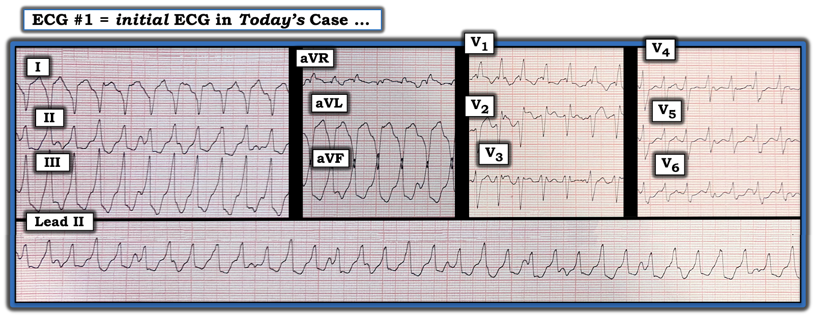
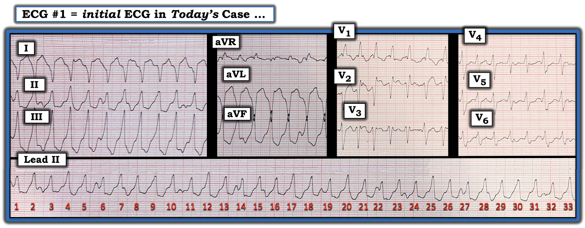
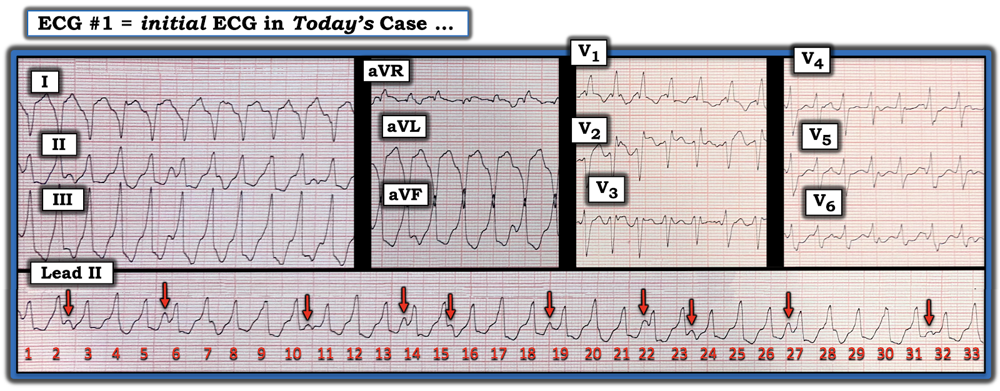
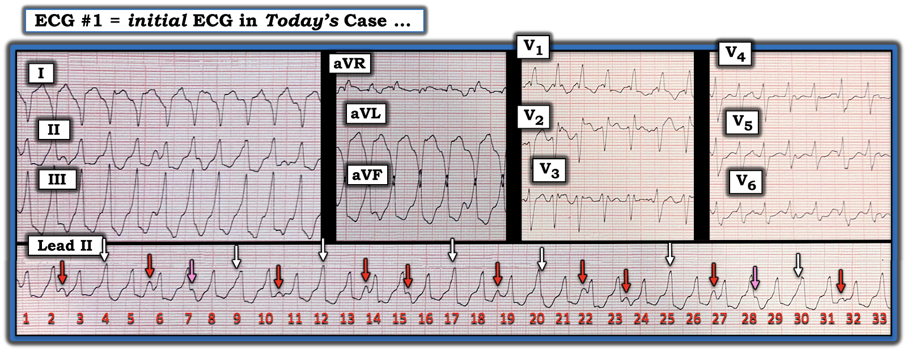
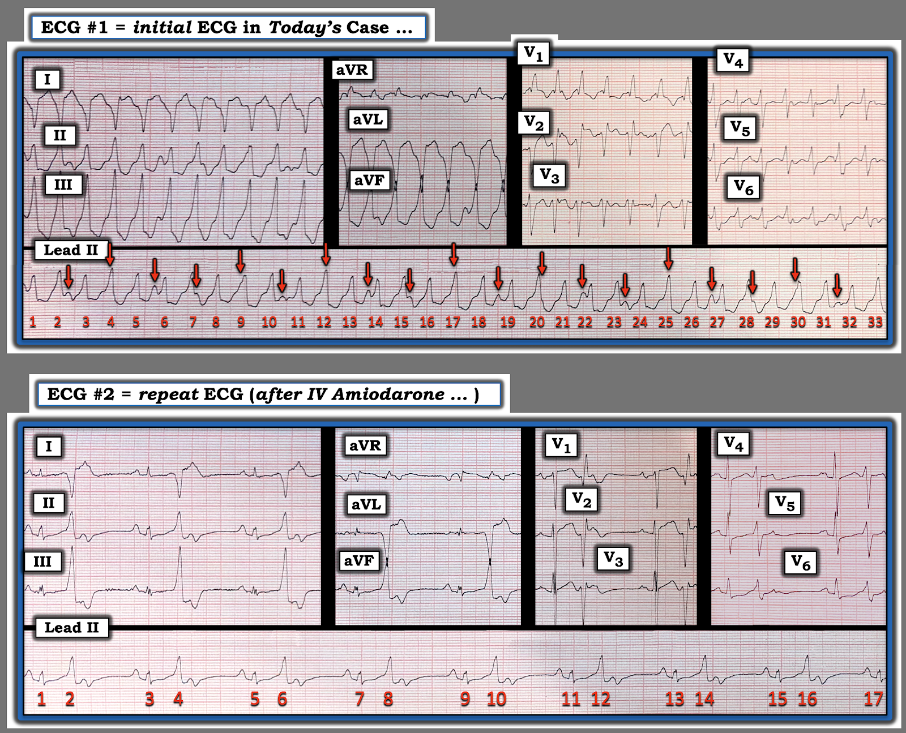
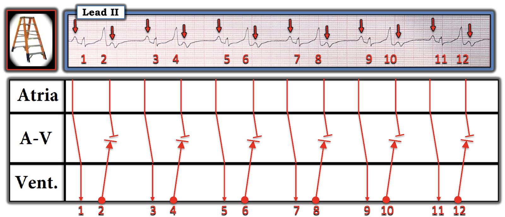

ECG Blog #520 — Bạn chắc chắn đến mức nào?
Bạn được yêu cầu diễn giải điện tâm đồ ở Hình 1. Lựa chọn nào sau đây là câu trả lời đúng nhất?
- A) AFib với đáp ứng thất nhanh.
- B) SVT kèm dẫn truyền lệch hướng dạng RBBB.
- C) Nhịp này có thể là VT.
- D) Nhịp này là VT.


= = = = = = =
[ Viết tắt: AFib (rung nhĩ — Atrial Fibrillation) — SVT (nhịp nhanh trên thất — SupraVentricular Tachycardia) — RBBB (blốc nhánh phải — Right Bundle Branch Block) — VT (nhịp nhanh thất — Ventricular Tachycardia)].
==============================
Cách tiếp cận CỦA TÔI với bản ghi hôm nay:
Dù chúng ta luôn muốn có ít nhất một bệnh sử ngắn gọn (ít nhất là tuổi của bệnh nhân — và lý do ghi điện tâm đồ) — nhưng ở đây chúng ta không được cung cấp. Dù vậy, vẫn có đủ thông tin để chọn đúng câu trả lời.
- Hãy NHÌN lại bản ghi hôm nay ở Hình 2. Để rõ ràng — tôi đã đánh số các nhát bóp trên dải nhịp dài chuyển đạo II.


==============================
SUY NGHĨ CỦA TÔI:
Theo Cách tiếp cận P's, Q's, 3R (Xem ECG Blog #185) — nhịp ở Hình 2 là một nhịp nhanh QRS rộng đều (WCT — Wide-Complex Tachycardia):
- Nhìn tổng thể, nhịp có vẻ đều (Regular). Điều này đánh giá tốt nhất ở các chuyển đạo ghi đồng thời I và III, nơi dễ thấy tính hằng định của khoảng R-R hơn (và khó nhận ra hơn ở chuyển đạo II — nơi có nhiều nhiễu làm biến dạng hơn).
- Tần số (Rate) của nhịp hơi trên 150/phút (tức là khoảng R-R kéo dài hơi ngắn hơn 2 ô lớn).
- QRS rộng (kéo dài ít nhất 3 ô nhỏ — tức là ≥0.12 giây).
- Có sóng P không?
==============================
Chúng ta đã có thể loại trừ điều gì?
- Việc khoảng R-R ở Hình 2 đều trên thực tế đã loại trừ AFib (và nếu chúng ta xác nhận được là thật sự có sóng P — điều này sẽ loại trừ AFib một cách chắc chắn).
Những gì chúng ta biết:
- Nhịp ở Hình 2 là một nhịp nhanh QRS rộng đều (WCT — Wide Complex Tachycardia).
- Tần số của nhịp hơi trên 150/phút.
- Không có dấu hiệu rõ ràng của sóng P xoang (tức là không có sóng P dương hằng định với khoảng PR cố định đi trước mỗi phức bộ QRS trên dải nhịp dài chuyển đạo II).
- Dù đã nói như trên — một số sóng nhỏ hướng lên trên đường nền dường như có hiện diện suốt dải dài chuyển đạo II. Đây có thể là sóng P.
- ĐIỂM THEN CHỐT (PEARL) #1: Giả sử bệnh nhân hôm nay là người lớn — thì nguyên nhân thường gặp nhất, vượt xa các nguyên nhân khác, của một nhịp WCT đều không có dấu hiệu rõ ràng của sóng P xoang là VT. Vì vậy — Chúng ta cần giả định là VT cho đến khi chứng minh được điều ngược lại!
ĐIỂM THEN CHỐT (PEARL) #2:
Chúng ta có thể tiến thêm 1 bước trong chẩn đoán phân biệt bằng cách xem hình dạng QRS.
- Mặc dù phức bộ QRS chủ yếu dương ở chuyển đạo V1, kèm sóng S tận rộng ở chuyển đạo bên V6, có thể phù hợp với dẫn truyền kiểu RBBB — nhưng hầu như bạn sẽ không bao giờ thấy một phức bộ QRS âm hoàn toàn ở chuyển đạo I với một nhịp trên thất.
- Như vậy, dựa trên hình dạng QRS — điều này gợi ý mạnh rằng nhịp ở Hình 2 là VT (nghĩa là chúng ta có thể loại trừ trên thực tế SVT kèm dẫn truyền lệch hướng dạng RBBB).
CÂU HỎI:
- Nhưng — Chúng ta có chắc chắn 100% rằng nhịp hôm nay là VT không?
Suy nghĩ tiếp theo của tôi:
Đến thời điểm này trong quá trình diễn giải — tôi ước tính khả năng thống kê nhịp trong ca hôm nay là VT ở mức trên 95%! (dựa trên việc không có sóng P xoang trong nhịp WCT đều này — và nhận thấy hình dạng QRS ở chuyển đạo I âm hoàn toàn). Dù vậy — tôi muốn tăng độ chính xác của việc diễn giải hết mức có thể — và — trong ca hôm nay có một cách để chúng ta nâng khả năng thống kê là VT lên 100%
- Xin nhấn mạnh: NẾU chúng ta ở bên giường bệnh nhân này — việc thứ 1 chúng ta sẽ làm là xác định bệnh nhân có ổn định huyết động hay không! Đó là vì nếu bệnh nhân không ổn định với nhịp này — thì nhịp đó là gì sẽ không còn quan trọng nữa, vì khi đó có chỉ định sốc điện chuyển nhịp đồng bộ ngay lập tức.
- Nhưng giả sử bệnh nhân này ổn định huyết động — thì chúng ta có được một chút thời gian để nhanh chóng xem kỹ hơn một chút.
- Xin LƯU Ý: Tôi đã mô tả những suy nghĩ ở trên theo kiểu quay chậm. Khi có thực hành và kinh nghiệm — Bạn sẽ có thể đi tới điểm này của quy trình trong không quá 10–15 giây!
Bước tiếp theo: Vậy — Có sóng P trên điện tâm đồ hôm nay không?
Hãy NHÌN lại điện tâm đồ ở Hình 2.
- Có cách nào DỄ để xác định chắc chắn là có (hay không có) sóng P trên điện tâm đồ hôm nay không?
==============================
TRẢ LỜI: Có sóng P trên điện tâm đồ hôm nay không?
MẤU CHỐT để tối ưu độ chính xác của việc diễn giải — là xác định XEM có sóng P xoang đều ẩn bên dưới hay không!
- ĐIỂM THEN CHỐT (PEARL) #3: Như tôi vẫn thường nhấn mạnh trong ECG Blog này — bước đơn giản là đánh dấu sóng P giúp ích vô cùng trong việc xác định sự hiện diện và bản chất của hoạt động nhĩ nền.
- Ở Hình 3 — tôi đã đánh dấu bằng mũi tên ĐỎ những sóng nhỏ hướng lên trên dải nhịp dài chuyển đạo II trông có vẻ có thể là sóng P.
- Nếu các mũi tên ĐỎ này ở Hình 3 thật sự đang làm nổi bật sự hiện diện của các sóng P đều ẩn bên dưới — thì điều này có gợi ý khoảng P-P có thể là bao nhiêu không?
- ĐIỂM THEN CHỐT (PEARL) #4: Nếu chúng ta chứng minh được các sóng nhỏ hướng lên ở Hình 3 vẫn đều đặn hằng định suốt dải dài chuyển đạo II — thì điều này sẽ chứng minh rằng các sóng nhỏ hướng lên này đúng là đại diện cho một nhịp hoạt động nhĩ đều ẩn bên dưới.
- Để làm điều này — tôi tìm xem khoảng cách ngắn nhất giữa 2 mũi tên ĐỎ liên tiếp có vẻ là bao nhiêu. Chẳng phải khoảng cách ngắn nhất này dường như lặp lại giữa mũi tên ĐỎ thứ 4 và thứ 5 — và giữa mũi tên ĐỎ thứ 7 và thứ 8 sao?


ĐIỂM THEN CHỐT (PEARL) #5: Để xác định trong vòng vài giây xem có một nhịp sóng P đều ẩn bên dưới trên dải dài chuyển đạo II hay không — Bạn phải dùng compa đo (calipers)!
- Xin nhấn mạnh: Tôi không khuyến khích dùng compa đo nếu bệnh nhân của bạn không ổn định. Một bệnh nhân không ổn định huyết động trong nhịp WCT cần được sốc điện chuyển nhịp ngay lập tức!
- Nhưng NẾU bệnh nhân có nhịp được trình bày ở Hình 3 ổn định huyết động — thì chỉ mất không quá vài giây dùng compa đo để "dò bước" nhịp mà tôi đã làm nổi bật bằng các mũi tên màu ở Hình 4.


Phân tích Hình 4:
Tất cả những gì tôi đã làm để đi từ Hình 3 đến Hình 4 — là đặt compa đo theo khoảng P-P được gợi ý bởi khoảng cách giữa mũi tên ĐỎ thứ 4 và thứ 5 ở Hình 4 (bằng với khoảng cách giữa mũi tên ĐỎ thứ 7 và thứ 8) — rồi "dò bước" khoảng P-P giả định này bằng compa đo của bạn suốt phần còn lại của dải dài chuyển đạo II.
- Mặc dù các phức bộ QRS rộng đều, xuất hiện đúng lúc, che khuất không cho chúng ta thấy sóng P dưới các mũi tên TRẮNG mà tôi đã thêm vào Hình 4 — nhưng có thể thấy rõ một sóng dương chắc chắn ẩn bên dưới, ló ra ở phần đuôi của QRS của nhát #7 và 28 (tức là dưới mỗi mũi tên trong 2 mũi tên HỒNG).
- Điều này cho chúng ta biết các mũi tên màu ở Hình 4 đại diện cho một nhịp nền gồm các sóng P đều xuất hiện với tần số nhĩ ~90/phút!
ĐIỂM THEN CHỐT (PEARL) #6:
Các sóng P được biểu thị bằng các mũi tên màu ở Hình 4 không liên quan với các phức bộ QRS lân cận. Điều này cho chúng ta biết có phân ly nhĩ thất hoàn toàn xảy ra suốt dải nhịp dài chuyển đạo II — điều này chứng minh nhịp là VT!
- Theo kinh nghiệm của tôi — phân ly nhĩ thất bị chẩn đoán quá mức rất nhiều! Đó là do xu hướng mặc định có phân ly nhĩ thất bất cứ khi nào thầy thuốc thấy bất kỳ gợi ý nào về các sóng nền ẩn bên dưới. Trong nhiều thập kỷ theo dõi các nhịp WCT đều — phần lớn các ca nhịp WCT được ghi là có "phân ly nhĩ thất" thật ra không thể hiện dấu hiệu này.
- Chính vì phân ly nhĩ thất thật sự chứng minh một nhịp WCT là VT — nên tôi cho rằng tốt nhất là tránh chẩn đoán phân ly nhĩ thất trừ khi bạn chứng minh được rõ ràng sự hiện diện của các sóng P đều ẩn bên dưới suốt một phần đáng kể của nhịp. Việc này chỉ có thể làm được bằng compa đo.
- Đáng tiếc — thực tế lâm sàng là hiếm khi thấy được phân ly nhĩ thất ở các nhịp WCT nhanh hơn. Đó là vì khi WCT xảy ra với tần số nhanh hơn — các phức bộ QRS rộng (và các sóng ST-T đi kèm thường có kích thước lớn) che giấu rất hiệu quả các sóng P đúng lúc ẩn bên trong.
- ĐIỀU CỐT LÕI: Các mũi tên màu thấy ở Hình 4 đúng là thuyết phục về phân ly nhĩ thất — vì chúng xuất hiện hằng định suốt dải nhịp dài chuyển đạo II. Điều này chứng minh không còn nghi ngờ gì rằng nhịp WCT hôm nay là VT!
===========================
LƯU Ý: Với bạn đọc muốn tìm hiểu thêm về các khái niệm và ứng dụng lâm sàng của phân ly nhĩ thất trong đánh giá nguyên nhân của một nhịp WCT đều — xem lại ECG Blog #335 sẽ rất bổ ích.
- Có thể tìm thêm các ví dụ về "Quan điểm của tôi" khi đánh giá nhịp WCT đều trong ECG Blog #196 — Blog #220 — Blog #263 — và Blog #283 — cùng nhiều bài khác.
===========================
CA BỆNH hôm nay TIẾP DIỄN:
Bệnh nhân trong ca hôm nay là một nam giới trung niên có tiền sử bệnh cơ tim phì đại (HCM). Ông đến khám vì hồi hộp đánh trống ngực mới xuất hiện, xảy ra cùng lúc với nhịp lúc nhập viện hôm nay.
- Nhân viên cấp cứu ngoài viện tại hiện trường đã sốc điện chuyển nhịp cho bệnh nhân. Biện pháp này có hiệu quả nhất thời, khôi phục nhịp bình thường — nhưng ngay sau đó nhịp WCT tái phát.
- Đã bắt đầu dùng Amiodarone tĩnh mạch. Bệnh nhân cải thiện nhanh — và các dấu hiệu sinh tồn ổn định.
- Vào thời điểm này — điện tâm đồ ghi lại trình bày ở phía dưới Hình 5 đã được ghi.
CÂU HỎI:
- Bạn diễn giải nhịp trên điện tâm đồ ghi lại như thế nào?
- Điện tâm đồ #2 có ủng hộ chẩn đoán VT của chúng ta ở bản ghi ban đầu không?


Nhịp trên điện tâm đồ #2:
Điện tâm đồ ghi lại ( = bản ghi ở phía dưới Hình 5) — cho thấy một nhịp đôi (bigeminal), trong đó cứ cách một nhát lại có một PVC.
- Một lần nữa — các MẤU CHỐT để diễn giải bản ghi lại này là: i) Đánh dấu sóng P trên điện tâm đồ #2; — và, ii) Xác định xem sóng P trên điện tâm đồ #2 có liên quan với các phức bộ QRS lân cận không?
Lưu ý những điểm sau:
- Sóng P đều có hiện diện trên điện tâm đồ ghi lại suốt dải nhịp dài chuyển đạo II ( = các mũi tên ĐỎ ở bản ghi phía dưới trong Hình 6). Tần số của các sóng P này trên bản ghi lại hơi chậm hơn so với trên điện tâm đồ #1.
- Trên điện tâm đồ #2, tất cả các nhát mang số lẻ đều là dẫn truyền nhịp xoang bình thường — được xác định nhờ khoảng PR cố định trước các nhát #1,3,5,7,9,11,13,15,17.
- Tất cả các nhát mang số chẵn trên điện tâm đồ #2 là PVC. Việc các sóng P xoang đúng lúc tiếp tục xuất hiện suốt dải nhịp dài chuyển đạo II trên bản ghi lại này chứng minh các nhát #2,4,6,8,10,12,14,16 là PVC — như được trình bày trong giản đồ bậc thang (laddergram) ở Hình 7 ( = cách duy nhất để các sóng P xoang đúng lúc tiếp tục không bị gián đoạn ở Hình 7 — là các nhát mang số chẵn phải xuất phát từ thất, với dẫn truyền ngược dòng của các PVC này không đi ngược hết đường lên tới nhĩ).
- Cuối cùng — Lưu ý rằng hình dạng QRS của các nhát rộng đến sớm trên điện tâm đồ #2 giống hệt hình dạng QRS ở từng chuyển đạo trong 12 chuyển đạo của điện tâm đồ ban đầu (qua đó xác nhận chẩn đoán VT của chúng ta đối với điện tâm đồ #1).



KẾT LUẬN CA BỆNH:
- Đội cấp cứu ngoài viện đã chuyển bệnh nhân tới bệnh viện. Bệnh nhân được chuyển tới chuyên khoa điện sinh lý tim (EP) để cân nhắc đặt ICD (máy khử rung tim cấy được — Implantable Cardioverter-Defibrillator).
==================================
Lời cảm ơn: Xin cảm ơn Konstantin Тихонов (từ Moscow, Nga) đã cung cấp ca bệnh và bản ghi này.
==================================